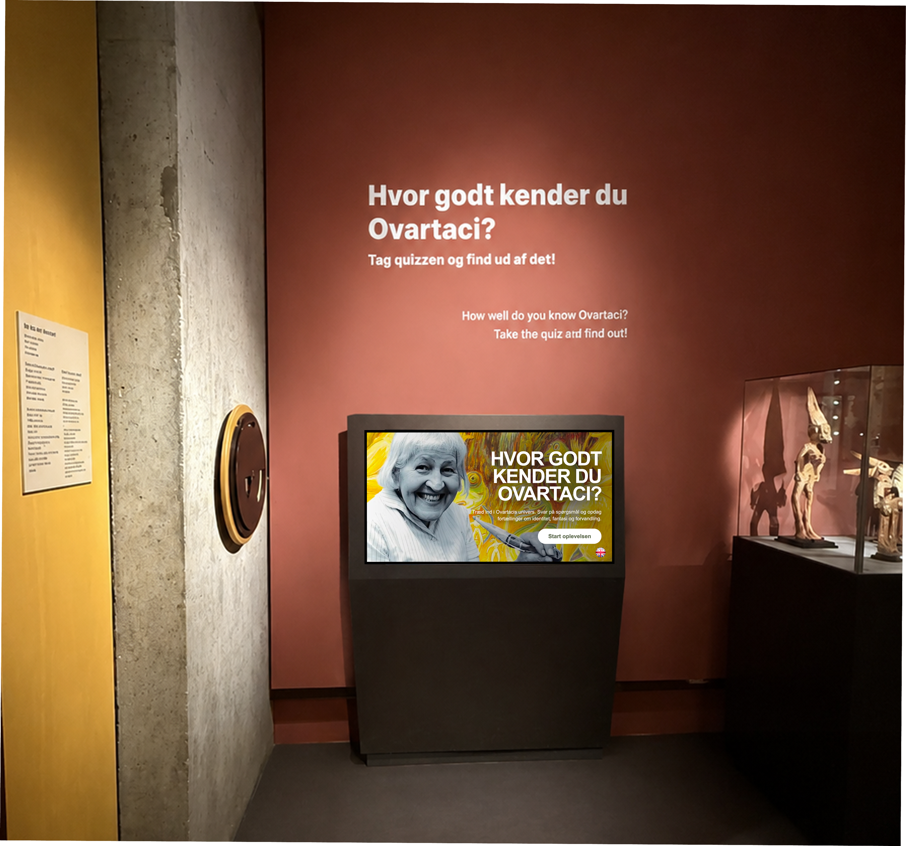

01
Projektet
En mere aktiv museumsoplevelse
I dette studieprojekt udviklede vi en interaktiv quiz til Museum Ovartaci. Formålet var at undersøge, hvordan en digital løsning kunne gøre museumsbesøget mere engagerende og samtidig styrke formidlingen af museets historier.
Quizzen skulle invitere gæsterne til aktivt at gå på opdagelse i Ovartacis univers frem for blot at læse information.
